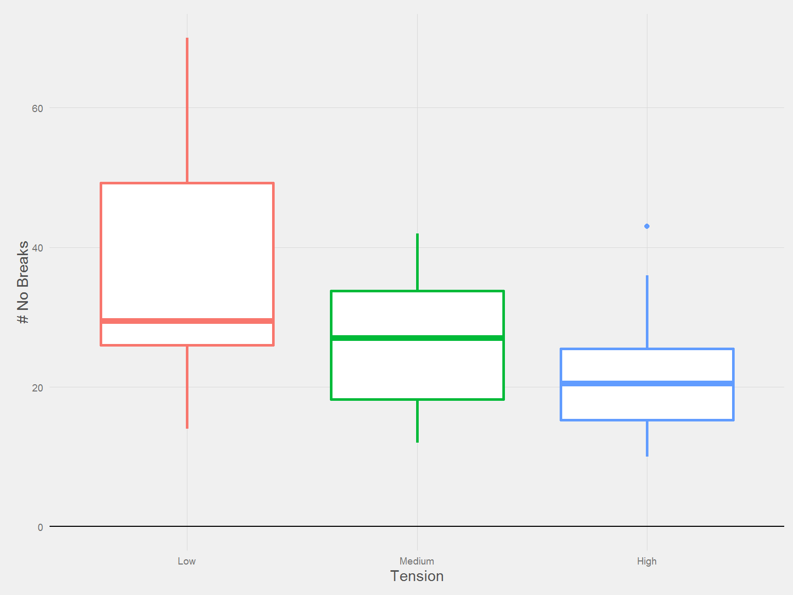
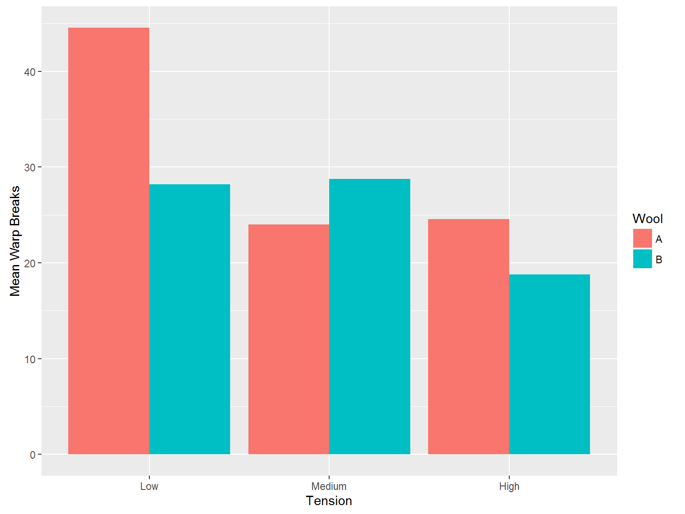

Examining All Breaks

Mark Pratley
1 December 2015
To see this as a presentation click here
This is a practice presentation using the warpbreaks dataset.
The warpbreaks dataset gives the number of breaks in Yarn during Weaving.
It uses fixed lengths of yarn with two different types of wool and varying tensions.
This presentation will investigate which type of wool is recommended for different tensions.
The Warpbreaks dataset has 54 observations with 3 variables:

| Tension | Num | min | max | mean | median | sd |
|---|---|---|---|---|---|---|
| Low | 18 | 14 | 70 | 36.38889 | 29.5 | 16.446487 |
| Medium | 18 | 12 | 42 | 26.38889 | 27.0 | 9.121009 |
| High | 18 | 10 | 43 | 21.66667 | 20.5 | 8.352527 |
From the graphs and table statistics:
Higher tension means less breaks.
Low tension gives more breaks and has higher unpredictability.

| Wool | Num | min | max | mean | median | sd |
|---|---|---|---|---|---|---|
| A | 27 | 10 | 70 | 31.03704 | 26 | 15.851429 |
| B | 27 | 13 | 44 | 25.25926 | 24 | 9.300921 |
From the statisitics table and the graphs, we can see that overall wool type B has less breaks with lower mean and median values.
Whilst wool type A has a larger standard deviation, which along with a lower minimum and higher maximum shows that wool A has much higher variation than type B.
It is interesting to note that the multimodal appearance (multiple peaks) on the density plot may imply that the different wool types have differing sensitivities to tension. We will explore this next.


| Tension | Wool | Num | min | max | mean | median | sd |
|---|---|---|---|---|---|---|---|
| Low | A | 9 | 25 | 70 | 44.55556 | 51 | 18.097728 |
| Low | B | 9 | 14 | 44 | 28.22222 | 29 | 9.858724 |
| Medium | A | 9 | 12 | 36 | 24.00000 | 21 | 8.660254 |
| Medium | B | 9 | 16 | 42 | 28.77778 | 28 | 9.431036 |
| High | A | 9 | 10 | 43 | 24.55556 | 24 | 10.272671 |
| High | B | 9 | 13 | 28 | 18.77778 | 17 | 4.893306 |
Generally wool B is better, with the best combination being Wool B with high tension.
The worst combination is Wool A with low tension, although Wool A is better if you exclusively use medium tension.
If you are only using medium tension then you should choose wool A.
Otherwise, always choose wool B.
If you can choose both wool and tension then you should choose Wool B with High Tension.